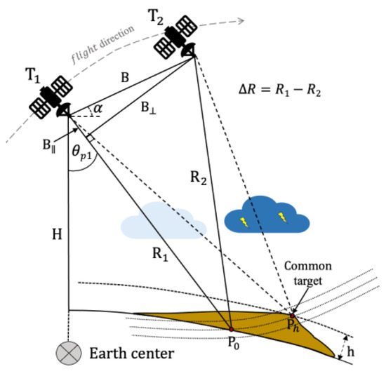
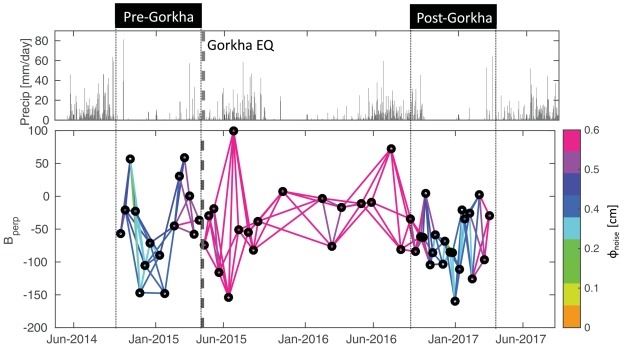

Chapter 8: Synthetic Aperture Radar (SAR) and SAR-Optical Data Fusion
Abstract
Synthetic Aperture Radar (SAR) technology has transformed remote sensing by providing reliable, all-weather, and day-night Earth observation capabilities. Unlike traditional optical sensors, which are limited by atmospheric conditions, SAR employs active microwave signals capable of penetrating clouds to consistently capture high-resolution imagery. Interferometric SAR (InSAR) enhances SAR capabilities by leveraging phase differences between SAR images acquired at different times, accurately measuring subtle Earth’s surface elevation changes. Differential InSAR (DInSAR) specifically measures surface displacement with millimeter-level accuracy, significantly aiding disaster prediction and environmental management. Nevertheless, these techniques encounter limitations such as atmospheric disturbances, phase decorrelation, and complex phase unwrapping procedures, impacting their operational feasibility.
Fig 1.1 InSAR. Source:GeoScience Australia
Fig 1.2 Source:MLU-EXPLAIN

Fig 1.3 Image fusion result of SAR and optical imagery. Source: ASF has useful SAR guide
Application
SAR technology has demonstrated practical value in urban surface deformation monitoring, especially for landslide detection and infrastructure stability assessments.
Landslide Monitoring:Li et al. (2020) applied SAR imagery from Sentinel-1 satellites for monitoring slow-moving landslides. Their workflow included radiometric calibration, geometric correction, and precise image co-registration, followed by generating interferometric image pairs. Utilizing Differential Interferometric SAR (DInSAR), they produced displacement maps by analyzing temporal phase differences. Advanced Persistent Scatterer Interferometry (PS-InSAR) was implemented to minimize atmospheric noise and decorrelation effects, clearly identifying active landslide areas. Integrating these SAR-based deformation results into Geographic Information Systems (GIS) provided accurate localization and timely monitoring, significantly enhancing disaster risk management and early-warning capabilities. 
Fig 2.1 Geometrical distortions of a spaceborne InSAR system.
Fig 2.2 Deformation maps obtained using ascending TerraSAR−X dataset (a) and descending COSMO-SkyMed dataset (b). The decomposed deformation in vertical (c) and horizontal (d) directions. Background image is a Google Map image.

Fig 2.3 (a) Estimated LOS deformation rate of buildings with CSK dataset. (b) Thermal dilation of the buildings. (c) Building deformation time series after compensating the thermal dilation.
Li et al. (2023) employed SAR interferometry from TerraSAR-X, Sentinel-1, and ground-based radar interferometry (GBRI) for urban infrastructure stability analysis. Their method included accurate georeferencing, image stacking, and Persistent Scatterer Interferometry (PS-InSAR), extracting stable radar reflections from persistent urban scatterers. After atmospheric corrections and phase unwrapping, precise millimeter-scale displacement maps were produced, highlighting critical structural instabilities in urban infrastructure. These results supported maintenance planning, risk assessments, and informed urban safety management strategies. 
Fig 2.4 Perpendicular baseline plot of Sentinel-1 data (bottom panel) in the Trishuli River catchment, Nepal. Black circles represent individual SAR data acquisitions and lines show interferogram pairs with colors representing the average local phase noise for each interferogram as computed during time-series processing (Hooper et al., 2012).
Fig 2.5 Landslide inventory map and InSAR line-of-sight (LOS) velocity for the pre-Gorkha period (October 2014–April 2015) draped over a hillshade of the topography. Regional scale inventory shown in panel (A) and close up view of landslides shown in panels (B-D). A velocity value of 0 corresponds to pixels that have been masked out but is set to yellow colour for viewing purposes. Black polygons show the landslides identified using our InSAR methodology. Gray polygons show potentially slow or “coherent” landslides mapped by Tsou et al. (2018).
Reflection
SAR, InSAR, and SAR-optical fusion have immense potential for environmental monitoring and urban planning, yet practical implementation encounters notable hurdles. Complexities in SAR data processing, such as atmospheric interference, phase decorrelation, and accurate spatial-temporal alignment with optical datasets, require specialized expertise and considerable computational resources. These challenges constrain widespread adoption in policy-driven contexts.
Future technological innovations could significantly boost SAR/InSAR practicality. Advanced machine learning (ML) and deep learning (DL) approaches could automate data interpretation and phase-unwrapping processes, substantially decreasing processing time and improving accuracy. Cloud-based SAR processing platforms leveraging AI algorithms could democratize access, reducing entry barriers and facilitating broader adoption.
Integration with real-time sensor networks, including Internet of Things (IoT) systems like GPS or ground-based radar, offers potential to correct atmospheric and surface inaccuracies promptly, enhancing overall reliability. Moreover, innovative multi-sensor fusion methods using advanced convolutional neural networks (CNNs) or Generative Adversarial Networks (GANs) could improve spatial-temporal consistency between SAR and optical data, increasing utility for decision-making. Further developing robust automated accuracy assessment frameworks, continuously incorporating ROC curves, will enhance model performance transparency and facilitate adaptive improvements. Ultimately, these technological innovations can bridge the gap between advanced SAR methods and their effective integration into environmental policy-making and operational monitoring frameworks.
References
Li, Z., Zhang, Q., & Wang, Y. (2020). InSAR-based detection method for mapping and monitoring slow-moving landslides in mountainous terrain. Remote Sensing of Environment, 248, Article 111976.
Li, Y., Ding, X., Sun, Q., Zhu, J., Zhang, L., & Zhang, B. (2023). Radar interferometry for urban infrastructure stability monitoring. Sustainability, 15(19), 14654.
Shakya, A., Biswas, M., & Pal, M. (2023). Fusion and classification of SAR and optical data. Remote Sensing, 15(1), 274.
West, R. D., Yocky, D. A., van der Laan, J. D., Anderson, D. Z., & Redman, B. J. (2021). Data fusion of high-resolution hyperspectral and polarimetric SAR imagery. Sandia National Laboratories.
Fawcett, T. (2006). An introduction to ROC analysis. Pattern Recognition Letters, 27(8), 861-874.